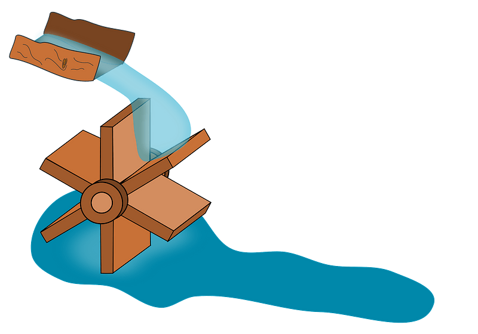

Water power heavily relies on moving water to harness energy. Water power is controlled using two main methods, dams and the current of a river.
Both techniques harness water's energy using a turbine and a generator. The turbine gets spun by the flow and spins the generator creating energy.
Like this, but more complicated:

In a dam, the stored water on the top gets released, turning the turbine and later powers the generator. Some even have a lower reservoir to store water and pump it back up.
The river strategy relies on natural forces. The people put a turbine in the middle of the river, and the same happens. People use other methods, but these two methods are the most common.
In conclusion, water power can be created in different ways by different forces.